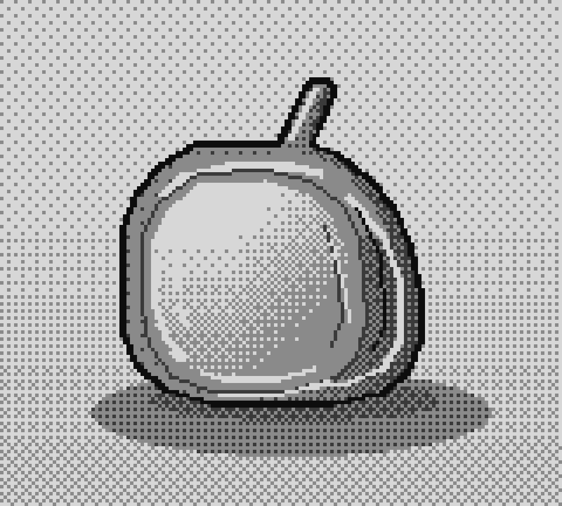
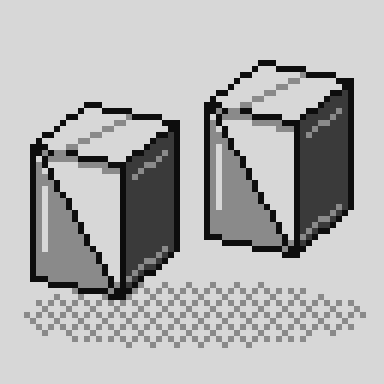
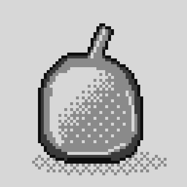
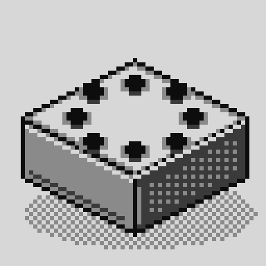
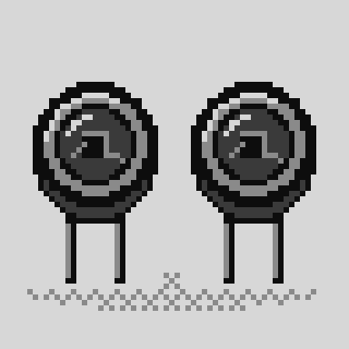
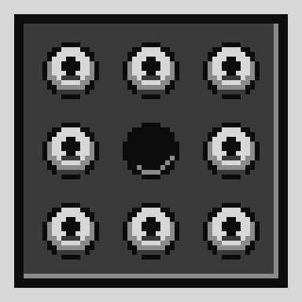
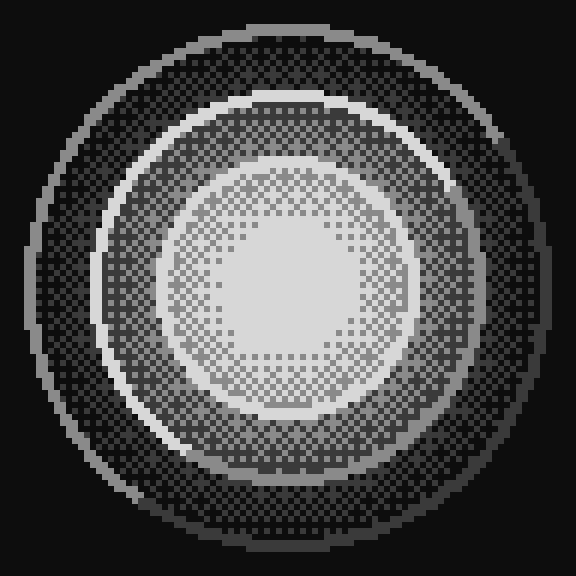

⁸⁷Rb와 광펌핑
자력계가 무엇을 읽는지 — ⁸⁷Rb의 준위 구조, 원편광이 원자를 한쪽으로 몰아넣는 과정, 그리고 그렇게 정렬된 스핀이 자기장 속에서 도는 속도.
████████░░10 VALUES · 5 CHECKS · PASS
OPEN▶RESEARCH IN OPTICALLY
PUMPED MAGNETOMETRY
PARK
SEONGHYEON
원자의 세차운동을 빛으로 읽습니다. 읽어낸 값이 어디서 왔는지까지 함께 남깁니다.

원자의 세차운동은 자기장의 세기에 정확히 비례합니다. 그 주파수를 빛으로 읽어내면, 눈금이 아니라 자연상수가 기준이 되는 자력계가 됩니다.
빔 경로, 편광, 검출 각도를 먼저 정하고 기구를 뒤에 맞춥니다.
FIG. 001 / OPTICAL PATH

증기압, 완충기체, 공명 선폭 — 셀 안에서 정해지는 값들.
FIG. 002 / ATOMIC PHYSICS

치수가 세 군데 흩어져 있으면 그건 버그입니다.
FIG. 003 / PARAMETRIC CAD

측정한 값과 가정한 값을 절대 같은 칸에 적지 않습니다.
FIG. 004 / SIGNAL AND VALIDATION

만든 사람과 검사하는 사람을 분리합니다. 통과는 의견이 아닙니다.
FIG. 005 / SUPERVISED PIPELINE

자력계가 무엇을 읽는지 — ⁸⁷Rb의 준위 구조, 원편광이 원자를 한쪽으로 몰아넣는 과정, 그리고 그렇게 정렬된 스핀이 자기장 속에서 도는 속도.
████████░░10 VALUES · 5 CHECKS · PASS
OPEN▶N₂를 얼마나 넣으면 D1 흡수선이 얼마나 넓어지는지를, 계수를 서로 검증한 두 논문에서 가져와 끝까지 계산한 것.
███████░░░9 VALUES · 5 CHECKS · PASS
OPEN▶고압 완충기체가 D1 선을 14 GHz로 넓히고 6.6 GHz 붉은쪽으로 밀면, 저압에서 잡은 잠금 주파수가 셀 안에서는 다른 전이 위에 놓입니다. 그 결과를 제출받아 검토한 기록.
█████████░11 VALUES · 7 CHECKS · PASS — 산술은 재현됨, 결론은 가정에 의존
OPEN▶원자 하나가 초당 몇 개의 광자를 흩뿌리는지, 그리고 시료가 편극되면서 그 값이 어떻게 스스로 줄어드는지.
██████░░░░9 VALUES · 4 CHECKS · PASS
OPEN▶T/03과 T/04이 하나의 인자로 뭉뚱그렸던 것을 준위별로 풉니다 — 8개 바닥 부준위, 8개 여기 부준위, 그리고 그 사이의 모든 쌍극자 행렬요소.
████████░░10 VALUES · 6 CHECKS · PASS
OPEN▶T/03과 T/04이 둘 다 다음 차례로 지목한 것 — 펌프 세기가 셀 전체에서 균일하다는 가정을 걷어냅니다. 빔과 원자를 함께 적분하면, 셀은 스스로 길을 뚫습니다.
████████░░11 VALUES · 6 CHECKS · PASS
OPEN▶T/01부터 T/06까지는 원자를 편광시키는 이야기였습니다. 이건 나머지 절반 — 펌프를 끄고, 스핀을 적도로 눕히고, 그것이 흩어질 때까지 도는 것. 그 회전이 신호입니다.
██████████17 VALUES · 8 CHECKS · PASS
OPEN▶Γ_g = 170 s⁻¹은 T/03부터 T/07까지 다섯 항목이 그대로 들고 다닌 모델 입력이었고, 다섯 항목 모두 '이 수가 틀리면 눈금이 틀린다'고 적어두었습니다. 필요한 단면적이 전부 Seltzer 논문 표 A.2에 있습니다. 계산해 보니 170이 아닙니다.
██████████16 VALUES · 6 CHECKS · PASS
OPEN▶빔을 도그레그가 아니라 U자로 되접어, 증기셀 유리 앞면을 감지면 뒤 2.0 mm에 놓고 감지면에서 구멍을 완전히 없앤 광학 배치.
██████░░░░9 VALUES · 4 CHECKS · PASS
OPEN▶PBS의 두 출력을 일치한 광다이오드 쌍으로 받아, 차로 패러데이 회전을 읽고 합으로 세기를 읽는 검출부 기구.
████░░░░░░6 VALUES · 3 CHECKS · PASS
OPEN▶만드는 에이전트와 검사하는 에이전트를 구조적으로 분리하고, 그 분리가 실제로 결함을 잡아내는지 끝까지 돌려본 기록.
██████░░░░5 VALUES · 6 CHECKS · PASS
OPEN▶RECORDED TO BE CHECKED

START
A PROJECT▶